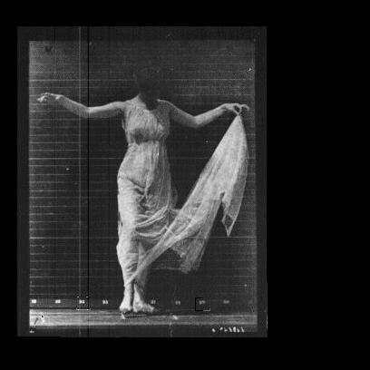

Zak Hap
Measure once, cut twice. m1c2 is the product studio of Zak Hap, a New York programmer who studied computer science and music composition at Columbia.
~daylight
- tech lead
2025–2026Hit OneSolo-built a 1000x leverage trading platform on MegaETH; $600M+ traded in its first three weeks - product lead
2019–2024CommonOne of DAO governance’s foundational platforms: $1B+ in token value across 300+ communities - co-founder
2019OdefiA MakerDAO-native layer splitting leveraged risk from stablecoin stability. Directionally right, too early. - co-founder
2018Liminal MediaShot commercials, ghostwrote whitepapers, helped blockchain founders raise ~$50M
~bro how the fuck do bitcoins work
You must wonder what else this person does with their time.
~moonlight
- cohostStudy HallA creative building series on Monday nights in New York, with Charlie Freiberg, since 2025. Past venues include Lincoln Center, Collaborative Fund, NYC Resistor
- boardQubitContemporary music and performance art, founded 2010. Past venues include DiMenna Center, Center for Performance Research, BAM Fisher
Also plays the shō .
.
~music not meant to be heard
I was once told about a woman living in Paris—a descendant of Scriabin—who spent her entire life writing music not meant to be heard. What it is, and how she does it, is not very clear; but I have always envied this woman. I envy her insanity, her impracticality.
~app musings
- Z-IndexA book recommendation engine
- Glass Bead Game
- Orange Shrine
~machine vision

~speaking
- May 2026Real-time Composable FinanceMegaETH MegaArcade, Seoul
- Jul 2023Product Development for DAOsETHCC, Paris
- Apr 2023State of DAOsTokyo
- Jul 2022Future of DAOsNEARCON, Brooklyn
- Jun 2018Blockchain for Impact Global SummitUnited Nations, New York
~the boundaries of food
soup is
a vegetable
in tea form,
meat ancillary*
*friends say i should make a cookbook on the boundaries of food
~elsewhere
- Xx.com/zakhap
- GitHubgithub.com/zakhap
- Are.naare.na/zak-hap
- RSSm1c2.xyz/feed.xml